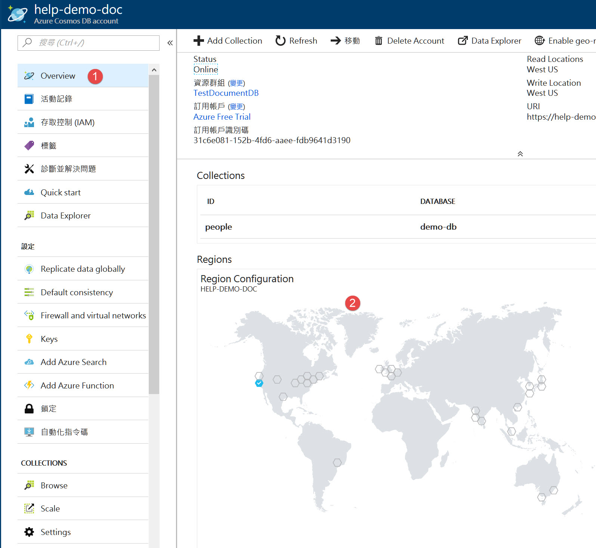
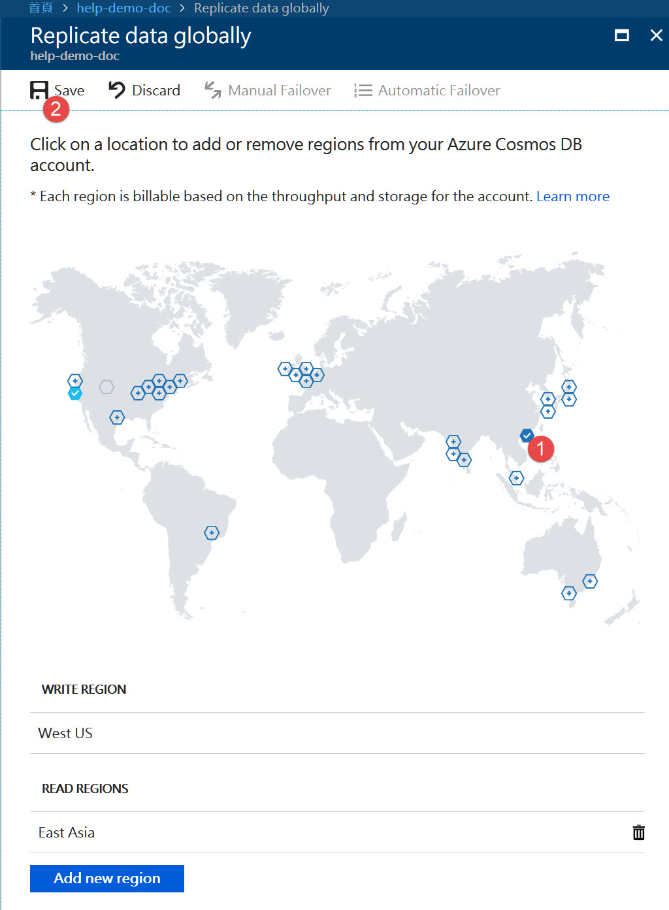

上一篇簡介了 Azure CosnmosDB 的簡單操作
這篇來說明 CosmosDB 的全域散發。
Azure CosmosDB 都可以做全域散發，簡單的說就是把資料同步到其他資料中心，
例如散佈在歐洲、美洲和亞中等資料中心，讓當地的使用者可以使用最靠近的 CosmosDB，讓傳輸速度更快。
設定方式非常簡單，到管理 CosmosDB 的主控台，點選 Region Configuration

之後就會進入 Replicate data globally 頁面，將你想要散發的位置選好，然後存檔，系統會跑一陣子，等待通知完成後就可以使用了。

接著我們增加一些程式來看看是不是真的有成功。
增加一個 ResponseData 類別，用來產生回應。
1
2
3
4
| public class ResponseData<T> {
public T Result { get; set; }
public string Info { get; set; }
}
|
再增加一個 API
1
2
3
4
5
6
| [HttpGet("{db}/{col}/ReadPersonWithInfo/{id}")]
public async Task<ResponseData<Person>> GetPersonWithInfo(string db, string col, string id) {
var docLink = UriFactory.CreateDocumentUri(db, col, id);
var result = await _client.ReadDocumentAsync<Person>(docLink);
return new ResponseData<Person> { Result = result, Info = $"ReadEndpoint:{_client.ReadEndpoint}" } ;
}
|
呼叫 ReadPersonWithInfo 可以得到下面資訊
1
2
3
4
5
6
7
8
| {
"result":{
"id":"1",
"name":"HelpM",
"age":15
},
"info":"ReadEndpoint:https://help-demo-doc-westus.documents.azure.com/"
}
|
可以看到 ReadEndpoint 是從 westus 也就是美西，不過我是在台灣呼叫，
想要讓他連到最近的東亞，我們還需要設定呼叫的規則，
不然只會從主要寫入的地區讀取。
修改建構子如下
1
2
3
4
5
6
7
| public DocController() {
ConnectionPolicy connectionPolicy = new ConnectionPolicy();
connectionPolicy.PreferredLocations.Add(LocationNames.EastAsia);
connectionPolicy.PreferredLocations.Add(LocationNames.WestUS);
_client = new DocumentClient(new Uri(_endpointUri), _primaryKey, connectionPolicy);
}
|
我們將美西以及東亞都加入，再次呼叫 API 得到
1
2
3
4
5
6
7
8
| {
"result":{
"id":"1",
"name":"HelpM",
"age":15
},
"info":"ReadEndpoint:https://help-demo-doc-eastasia.documents.azure.com/"
}
|
就會從東亞取得資料了。
ConnectionPolicy 只是讓我們設定要從哪邊開始抓資料，
如果第一順位的 DB 發生問題，將會去找第二順位的 DB，
並不會根據你的所在地自動改變呼叫的位置。
其實根據微軟的架構建議，會設計成多個 Web Server 在不同地區，
每個地區連線設定到最靠近的 CosmosDB，
不同地區的 Web Server 再用 Azure 流量管理員分散流量，
因此 CosmosDB 並不會直接對到 Client 端。

參考資料
使用 Azure Cosmos DB 跨足社交
如何使用 Azure Cosmos DB 全域散發資料